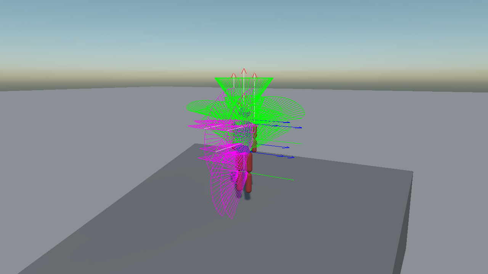
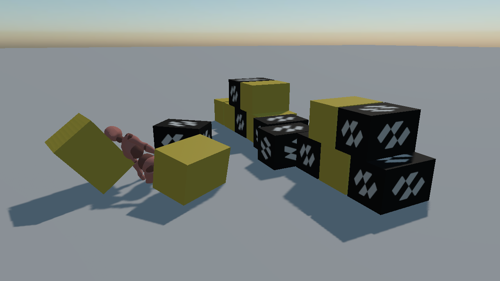

Ragdolls
A ragdoll is a figure the simulation moves instead of an animation: one rigid body per bone and one constraint per joint. There is no ragdoll component: a ragdoll is those two things assembled in a particular way, and this page is about the way.
The Anatomy
Two kinds of joint cover a whole body:
| Joint | Constraint | Why |
|---|---|---|
| Hips, waist, neck, shoulders | SwingTwistConstraint |
Cones in two directions plus a twist about the limb's own length, which is what a ball joint does. |
| Elbows, knees | HingeConstraint |
One axis, one way, and a stop. A knee that bends both ways is the single most obvious thing wrong with a bad ragdoll. |
The reference figure below is eleven bodies and ten joints, about 1.8 m tall. Every part is built upright, so each capsule runs along its own Y axis and no shape needs a rotation of its own; that in turn means every joint anchor is a height that can be read straight off the plan.
| Part | Shape | Mass | Joint to its parent | Limits |
|---|---|---|---|---|
| Pelvis | box 0.30 × 0.20 × 0.20 | 12 kg | None, it is the root | None |
| Torso | box 0.36 × 0.46 × 0.22 | 22 kg | swing twist to pelvis | 25° / 20° swing, ±25° twist |
| Head | sphere r 0.12 | 5 kg | swing twist to torso | 35° / 35° swing, ±45° twist |
| Upper arm ×2 | capsule r 0.055, h 0.30 | 2.5 kg | swing twist to torso | 80° / 60° swing, ±30° twist |
| Lower arm ×2 | capsule r 0.05, h 0.28 | 2 kg | hinge to upper arm | 0° to 140° |
| Upper leg ×2 | capsule r 0.08, h 0.44 | 7 kg | swing twist to pelvis | 60° / 35° swing, ±20° twist |
| Lower leg ×2 | capsule r 0.065, h 0.44 | 4 kg | hinge to upper leg | 0° to 140° |
// A shoulder or a hip. The anchor is in the child's own space: where the two bones meet.
var shoulder = new SwingTwistConstraint()
{
ConnectedBody = torso.FindComponent<RigidBody>(),
Anchor = new Vector3(0f, 0.15f, 0f),
TwistAxis = Vector3.UnitY,
PlaneAxis = Vector3.UnitX,
PlaneHalfConeAngle = MathHelper.ToRadians(80f),
NormalHalfConeAngle = MathHelper.ToRadians(60f),
TwistMinAngle = MathHelper.ToRadians(-30f),
TwistMaxAngle = MathHelper.ToRadians(30f),
// Limbs overlap at the joint on purpose, so they must not push each other apart from inside.
CollideConnected = false,
};
upperArm.AddComponent(shoulder);
// An elbow or a knee: one axis, bending one way, with a stop.
var knee = new HingeConstraint()
{
ConnectedBody = upperLeg.FindComponent<RigidBody>(),
Anchor = new Vector3(0f, 0.22f, 0f),
Axis = Vector3.UnitX,
NormalAxis = Vector3.UnitY,
MinAngle = 0f,
MaxAngle = MathHelper.ToRadians(140f),
CollideConnected = false,
};
Three Rules That Decide Whether It Holds Together
Almost every ragdoll that explodes, jitters or folds through itself breaks one of these.
CollideConnected = false on every joint. Limbs overlap where they meet, and that is what makes a figure look like a figure rather than a chain of sausages. Left connected, the solver spends every step pushing two bodies apart that a constraint is holding together, and the figure blows itself apart on the first frame.
Build the figure inside its own limits. A constraint measures its angles from the pose the two bodies were in when it was created. Assemble the figure with an elbow already bent past its stop and the solver's first job is to force it back, which reads as a limb snapping.
Keep neighbouring masses within about 10:1. The torso here is 22 kg and the upper arms are 2.5 kg, which is under 9:1 and about as far as it is worth going; 5:1 is comfortable. A light limb bolted to a very heavy one is a stiff problem: the solver has to move the light body a long way to satisfy a constraint the heavy one barely notices, and it shows up as jitter at the shoulder before it shows up anywhere else.
Tuning It: Draw the Joints
PhysicsDebugFlags.Constraints draws every joint's frame in place on the figure, with the cone a swing twist allows and the arc a hinge allows. This is how a ragdoll is tuned: a limb that reaches somewhere it should not is a cone drawn too wide, and it is visible before the figure has finished falling.
this.Managers.RenderManager.DebugLines = true;
this.Managers.FindManager<PhysicsManager>().DebugFlags = PhysicsDebugFlags.Constraints;

Powered Ragdolls
Every joint can hold a pose instead of hanging limp. Put its motors in MotorMode.Position and give it a target, and the constraint drives towards it:
foreach (SwingTwistConstraint joint in joints)
{
// The identity is the pose the joint was built in, since both bodies were given the same axes.
joint.TargetOrientation = Quaternion.Identity;
joint.SwingMotorMode = MotorMode.Position;
joint.TwistMotorMode = MotorMode.Position;
}
foreach (HingeConstraint hinge in hinges)
{
hinge.TargetAngle = 0f;
hinge.MotorMode = MotorMode.Position;
}
This is what a figure driven by an animation is doing every frame, with the targets read out of the animation instead of fixed.
Important
Motors make the figure rigid, not upright. Each target is the rotation of one limb relative to its parent, so a ragdoll lying on its face with its motors on becomes a mannequin lying on its face. Standing it up takes a force on the pelvis, which no joint can supply, since a joint only ever holds two bodies to each other. That is a job for a character controller, or for an external force on the root body.
From Animation to Ragdoll
The reason to build a ragdoll over a skeleton rather than as a free-standing figure is the switch: a character walks under its animation, is hit, and falls under the simulation carrying the momentum it had.
Nothing in the framework couples animation to physics, so the coupling is yours to write. It is four ideas.
One body per bone, in world space. A bone entity carries the model's own node scale, often a hundredth, so a collider placed directly on one has to be sized and offset in that space. It is far simpler to give each limb an entity of its own and record the fixed offset between it and its bone once, when the ragdoll is built:
// Built at the midpoint of the bone, turned so the capsule's own +Y runs down it.
Vector3 along = tip.Position - bone.Position;
Quaternion rotation = RotationFromTo(Vector3.UnitY, Vector3.Normalize(along));
Vector3 centre = bone.Position + (along * 0.5f);
// The offset, in the bone's own space. Read one way it drives the body from the animation.
Quaternion boneInverse = Quaternion.Inverse(bone.Orientation);
Vector3 localPosition = Vector3.Transform(centre - bone.Position, boneInverse);
Quaternion localRotation = boneInverse * rotation;
While animated, the bodies are kinematic and follow. Every limb is a RigidBody built with IsKinematic = true, and moved with MoveTo rather than a transform write, because that is what gives a kinematic body the velocity the contact solver needs:
private void OnPhysicsStepStarting(object sender, float fixedTimeStep)
{
foreach (Limb limb in this.limbs)
{
limb.Body.MoveTo(
limb.Bone.Position + Vector3.Transform(limb.LocalPosition, limb.Bone.Orientation),
limb.Bone.Orientation * limb.LocalRotation);
}
}
That single call is what lets a walking figure knock a wall down on its way through. Write the transform instead and it teleports through everything.
The switch itself is two lines.
this.animation.IsEnabled = false;
foreach (Limb limb in this.limbs)
{
limb.Body.IsKinematic = false;
}
Tip
Clearing IsKinematic does not recreate the body: it keeps its velocity, its constraints and its place in the world. That is what makes this transition look right: every limb inherits the velocity the animation had just given it, so the figure is thrown forward by the stride it was in the middle of instead of dropping straight down like a plank.
And from there the coupling runs the other way. Until the switch the bones led and the bodies followed. After it the bodies lead, and their pose has to be written back onto the bones every frame, or the figure lies on the floor as a simulation while its skin stands where the animation left it.
The offset recorded when the ragdoll was built is read in the other direction: take the body's world pose, take the offset back off it, and make what is left local to the bone's parent, because a bone's LocalPosition and LocalOrientation are what the skinning reads.
Quaternion orientation = limb.Body.Transform3D.Orientation * Quaternion.Inverse(limb.LocalRotation);
Vector3 position = limb.Body.Transform3D.Position - Vector3.Transform(limb.LocalPosition, orientation);
Matrix4x4 wanted = Matrix4x4.CreateFromTRS(position, orientation, limb.Bone.Scale);
Matrix4x4 local = wanted * limb.Parent.WorldInverseTransform;
limb.Bone.LocalPosition = local.Translation;
limb.Bone.LocalOrientation = local.Orientation;
The root joint is the one bone that loop does not write. Its parent is not another bone: it is the entity carrying the model, so that is what moves instead. The chain between the two is fixed, which leaves the entity's own transform as the only unknown:
// hips = chain * walker, so walker = chain inverse * hips.
this.transform.LocalTransform = Matrix4x4.Invert(this.hipsChain) * wanted;
Tell the renderer the pose can leave the bind envelope. A skinned mesh is culled against the box its bind pose came in, carried along by the root joint. It changes place, never shape, which is enough while an animation keeps the pose inside the envelope it was authored in. A ragdoll leaves that envelope within a stride, and the moment the mesh fails the test it stops being drawn.
SkinnedMeshRenderer.BoundsMode chooses a volume built from the joints instead:
var skinned = this.character.FindComponentInChildren<SkinnedMeshRenderer>(isExactType: false);
skinned.BoundsMode = SkinnedBoundsMode.Skeleton;
| Mode | Volume | Use it when |
|---|---|---|
| BindPose | The bind pose box, moved with the root joint. Costs nothing per frame. | An animation is the only thing moving the joints. This is the default. |
| Skeleton | Rebuilt each frame from where the joints actually are. | Anything else writes the pose: a ragdoll, inverse kinematics, procedural code. |

One more thing the clip needed: root motion
The Mixamo walk is not an in-place clip. Its hips channel carries the figure 184.53 node units forward over its one second and then snaps back to the start when it loops, so a character whose root is also being moved forward advances about two metres, jumps back one, and does it again, once a second.
Take that translation out and let the root supply all the travel:
// Captured once, when the ragdoll is built.
this.hipsRestZ = hips.LocalPosition.Z;
// And put back every step, before anything reads the pose.
Vector3 local = this.hips.LocalPosition;
this.hips.LocalPosition = new Vector3(local.X, local.Y, this.hipsRestZ);
Only the axis along the walk. The other two carry the sway and the bob of a real stride (four and eight node units of it) and zeroing them gives a figure that glides.
Important
AnimationClip.InPlaceMode looks like the setting for this, and today it is not: the enum and
ComputeRootMotion are both written, but the block in ModelExporter that would find the root node
and call it is commented out, so the value has no effect on an imported clip. Strip the translation at
run time until that is connected.
Match the root's speed to what the clip animates, or the feet skate. Here the clip's 184.53 node units a second, at 0.0101 m a unit, come to 1.87 m/s.